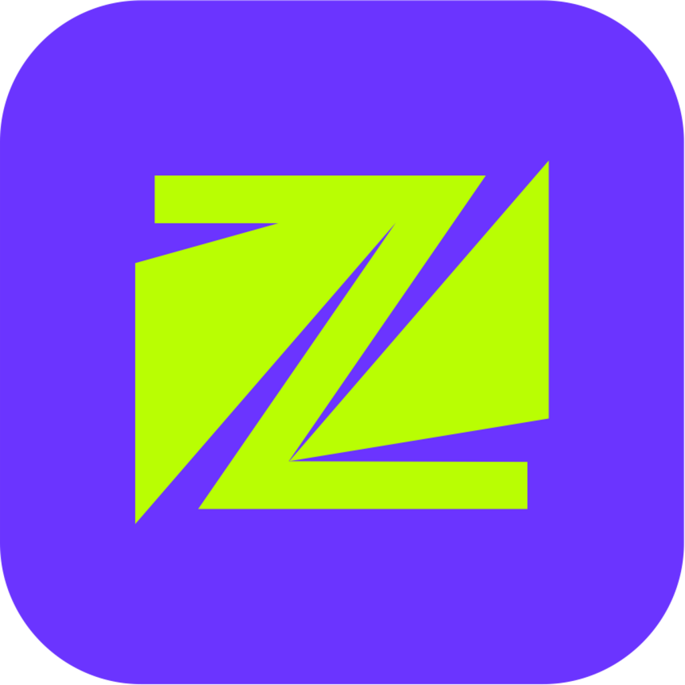

You're offline
ZionDesk can't reach the internet right now. Check your connection and try again.
We'll keep trying automatically.
ZionDesk can't reach the internet right now. Check your connection and try again.
We'll keep trying automatically.